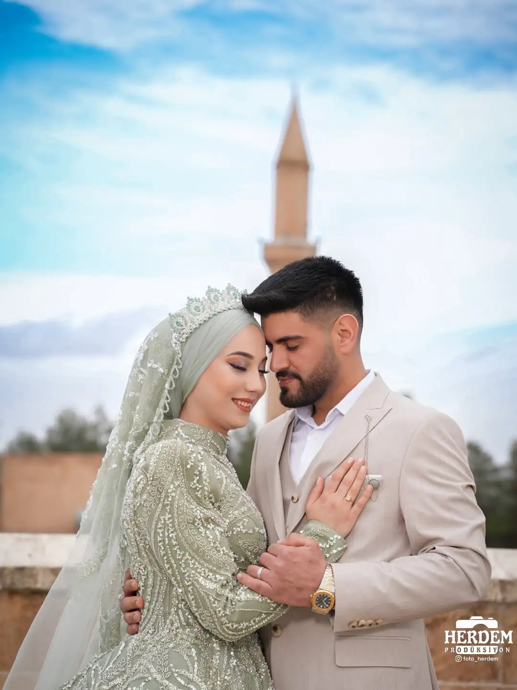
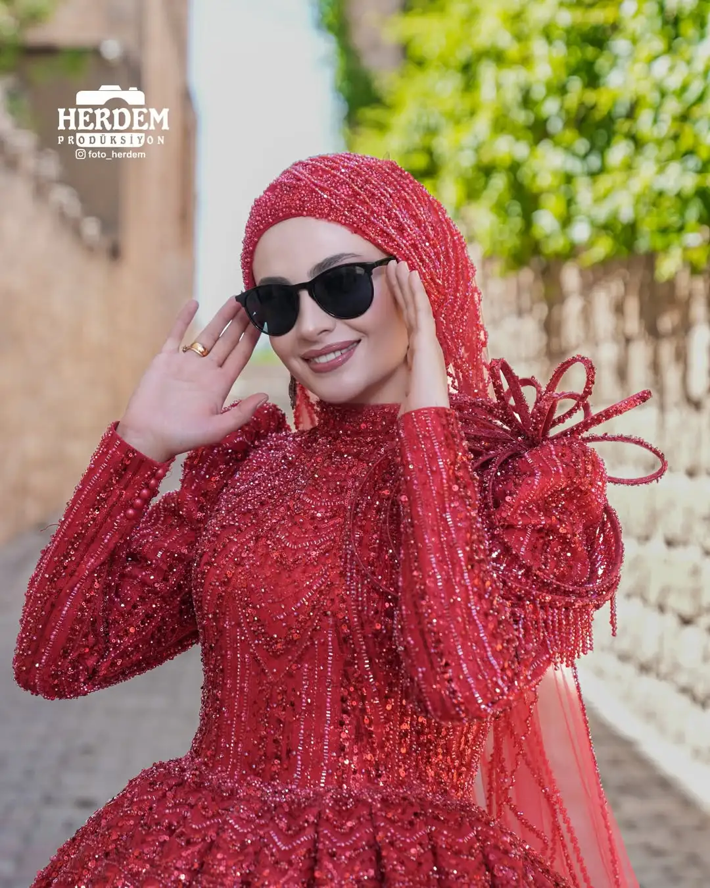
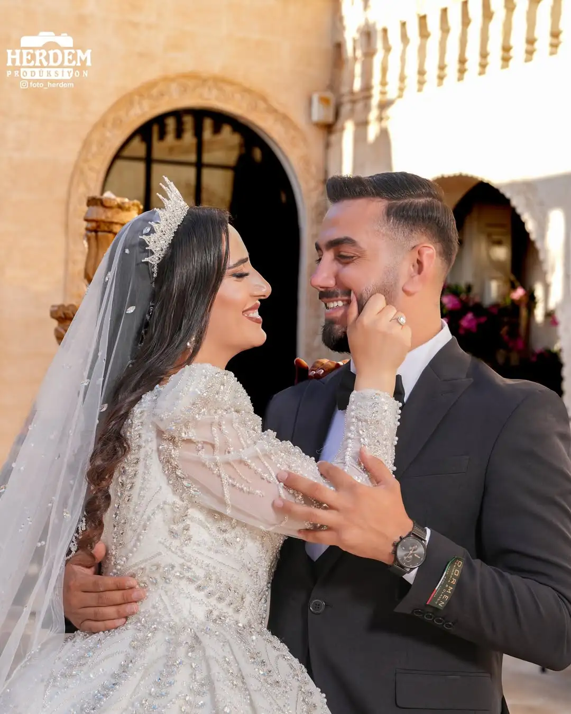
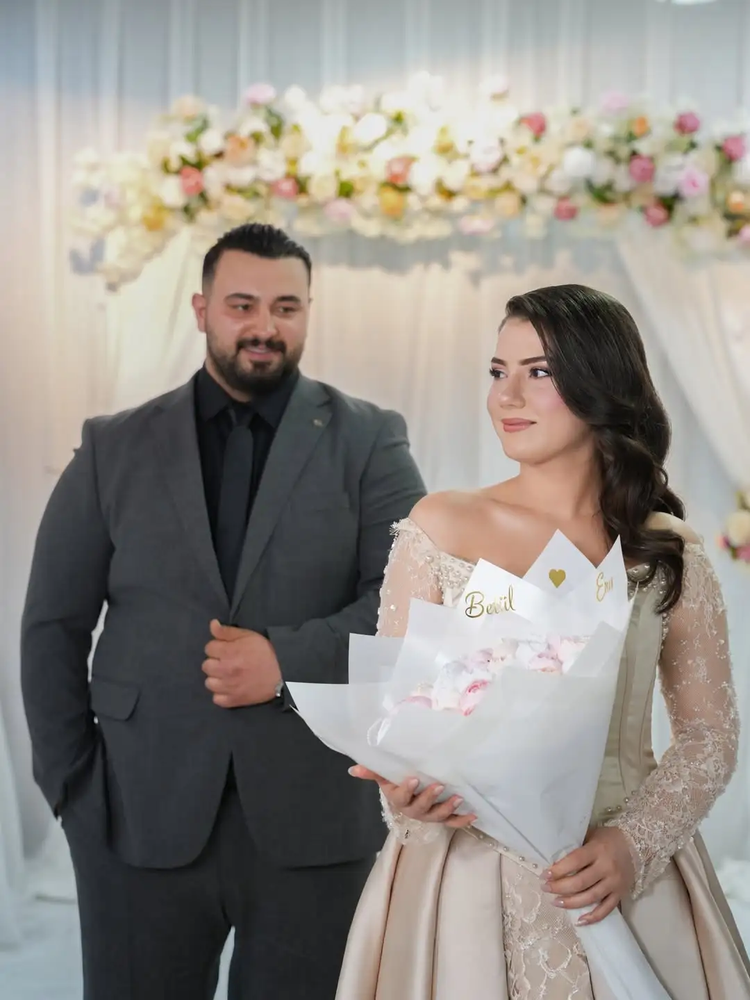
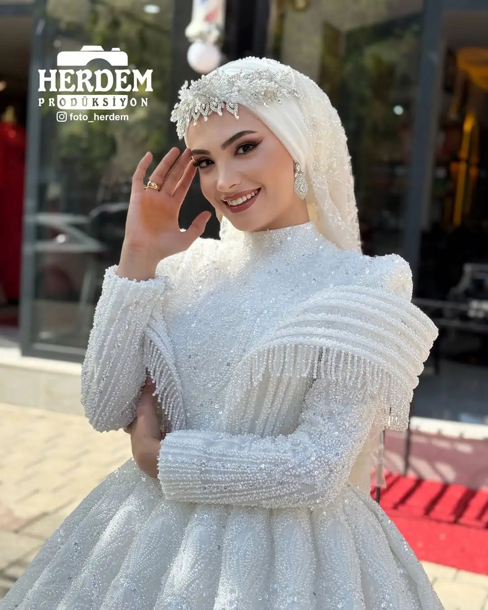

Doğum Günü
Bu kategoriye örnek kareler yüklendikçe eklenecek. Pastadan misafirlere her anı fotoğraflıyoruz.
Numune İsteDüğün, nişan, kına ve özel gün çekimlerinden derlenmiş örnek kareler. Paketlere göre hazırlanmış kategorileri keşfedin.
Örnek kareler paketlere göre gruplandı. Bir kategori seçin, size özel seçkiyi görün.










Bu kategoriye örnek kareler yüklendikçe eklenecek. Pastadan misafirlere her anı fotoğraflıyoruz.
Numune İsteSüsleme, aile ve kutlama kareleri için konsepte uygun bir çekim planlıyoruz.
Numune İste